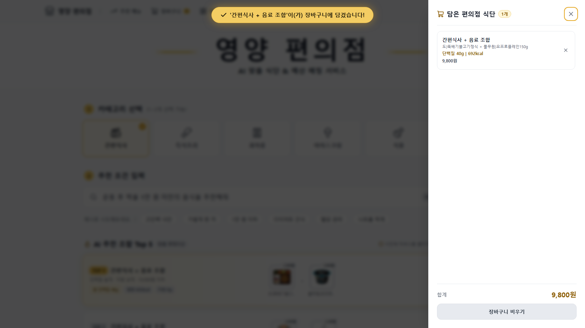
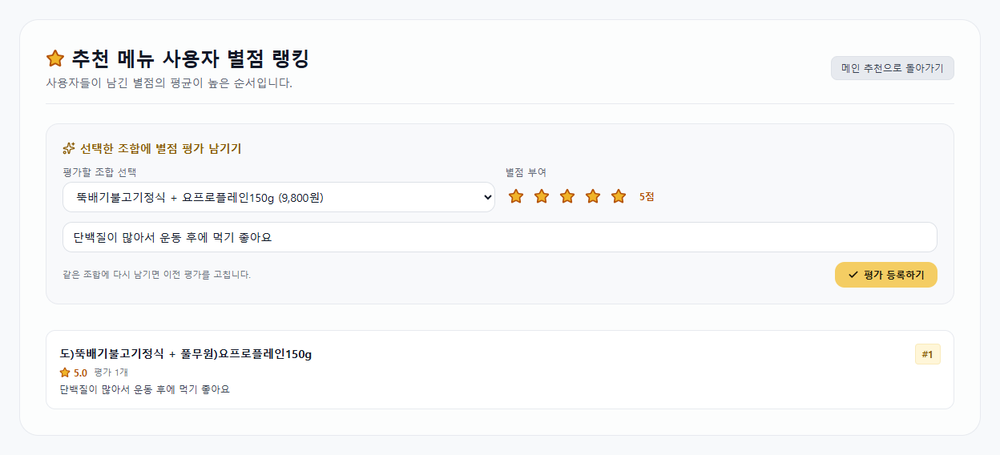
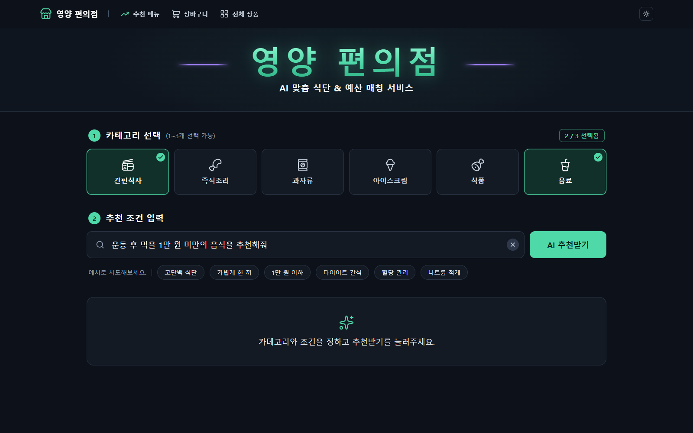

K-Digital Training · LLM 프로젝트 · 팀 아이넷
영양 편의점
편의점 상품의 영양성분표를 하나하나 보지 않아도, 상황과 예산을 한 문장으로 말하면 CU 상품 조합 Top 5를 영양 합계와 함께 추천해 주는 서비스입니다.
“운동 후 먹을 1만 원 미만의 음식을 추천해줘”

K-Digital Training · LLM 프로젝트 · 팀 아이넷
편의점 상품의 영양성분표를 하나하나 보지 않아도, 상황과 예산을 한 문장으로 말하면 CU 상품 조합 Top 5를 영양 합계와 함께 추천해 주는 서비스입니다.
편의점에서 목적에 맞게 먹으려면, 상품마다 영양성분표를 찾아보고 가격까지 직접 더해 봐야 합니다.
“운동 후 먹을 1만 원 미만의 음식을 추천해줘”
“5000원으로 든든한 한 끼 추천해줘”
“내일 얼굴 안 붓게 짠 거 말고 야식 추천해줘”
이런 질문에는 영양소(단백질, 나트륨 등)와 예산이 함께 들어 있습니다. 건강 관리 수요가 늘면서 상품을 비교하고 조합하는 수고가 커졌고, 자연어 한 문장만으로 예산에 맞는 조합을 찾아 주는 서비스가 필요하다고 보았습니다.
| 서비스 | 할 수 있는 것 | 부족한 점 | 영양 편의점 |
|---|---|---|---|
| 편의점 자체 앱 (포켓CU 등) | 상품·행사·재고 조회 | 목적별 조합 추천과 영양 합산이 없음 | 목적·예산에 맞는 조합과 영양 합계 |
| 범용 LLM 챗봇 | 자연어로 조합 추천 | 실제 상품·가격·영양을 추정해서 틀릴 수 있음(환각) | LLM은 문장 해석만, 수치는 DB와 코드가 계산 |
| 편의점 행사 정보 앱 | 여러 편의점 행사 비교 | 행사 중심, 영양 기반 추천 없음 | 영양 목표 기반 추천 |
| 식단 기록 앱 | 먹은 것을 검색해 기록 | 사기 전 선택은 돕지 않음 | 고르기 전에 바로 추천 |
사용자는 카테고리 1~3개와 문장 하나를 넣고, 카테고리마다 1개씩 고른 상품 조합 Top 5를 받습니다.






LLM은 문장을 조건으로 바꾸는 데만 쓰고, 가격·영양 계산과 순위는 DB 값으로 Python 코드가 합니다.
영양소 6개가 모두 확인된 상품만 DB에 넣었습니다. 소스·양념·조미료와 식재료 24개는 DB에는 남기고 추천 후보에서는 뺐습니다(추천 후보 2,130개).
예: “운동 끝나고 5천원으로 먹을 거 추천해줘” + 간편식사, 음료
A.X-4.0-Light (LLM)
영양 조건 2개와 방향을 JSON으로 추출. 예산은 규칙 코드로 추출
예산 → 검색 조건
예산이 있으면 단품 가격 상한 조건 추가
SQLite
고른 카테고리마다 후보 검색
Python 필터 엔진
카테고리별 1개씩 조합, 합계 ≤ 예산, 영양 0.7 + 가격 0.3 점수, 중복 상품 제거
React 웹
조합별 합계 가격, 영양 정보, 행사 표시
| 항목 | 계산 | 점수 |
|---|---|---|
| 상품 영양 점수 | 같은 카테고리 후보 안에서의 백분위(0~100). high는 그대로, low는 뒤집어서 두 조건 평균 샌)급식대가저당치킨샌드 90.2 · 레쓰비)캔200ml 60.9 | — |
| 조합 영양 점수 | (90.2 + 60.9) ÷ 2 | 75.5 |
| 가격 점수 | 합계 ÷ 예산 × 100 = 4,900 ÷ 5,000 × 100 (예산에 가까울수록 높음) | 98.0 |
| 총점 | 0.7 × 75.5 + 0.3 × 98.0 | 82.3 |
예산이 없거나 카테고리가 1개면 영양 점수만 씁니다. 웹 서버는 순위를 정하기 전에 사용자 별점 점수를 더하고, 별점이 없으면 위 점수 그대로입니다. 인사나 잡담처럼 관계없는 문장은 추천하지 않고 다시 입력하도록 안내합니다.
문장 해석 정확도는 영양 조건 2개와 방향이 모두 맞은 문장의 비율(완전 정확도)입니다. test 240문장은 학습과 튜닝에 쓰지 않고 마지막에 한 번만 측정했습니다.
프롬프트를 바꿔도 44% 근처에서 멈췄고, 문장 2,820개(학습 2,550 + 검증 270)로 A.X-4.0-Light를 QLoRA(4bit NF4, LoRA r16) 파인튜닝하자 86.1%가 되었습니다.
| 모델 | dev 216 | test 240 | 필요 용량 | 문장당 시간 |
|---|---|---|---|---|
| A.X-4.0-Light 4bit + 어댑터 | 86.1% | 85.8% | 14.7GB | 3.3초 |
| A.X-4.0-Light 양자화 (GGUF Q5_K_M) | 86.1% | 87.5% | 5.2GB | 0.81초 |
| EXAONE-3.5-7.8B 4bit + 어댑터 | 84.3% | 88.3% | 31.2GB | 3.5초 |
| EXAONE-3.5-7.8B 양자화 | — | 90.0% | 5.6GB | 0.89초 |
같은 데이터로 학습한 두 모델의 차이는 통계적으로 뚜렷하지 않았습니다(test McNemar p=0.29). 핵심 상황인 단백질 문장 74개에서 A.X가 더 많이 맞혀(89.2% 대 75.7%) A.X를 서비스 모델로 정했습니다. 양자화로 필요 용량은 약 65% 줄었고 정확도는 떨어지지 않았습니다. 시간과 용량은 RTX 4060 노트북 기준입니다.
아직 안 되는 것과, 고칠 방법입니다.
팀 아이넷 · K-Digital Training LLM 프로젝트
| 이름 | 역할 | 맡은 일 |
|---|---|---|
| 박하영 | 자연어처리, Agent LLM | 요청 해석 데이터 설계·정제, A.X QLoRA 파인튜닝·평가, 문장 해석 함수와 입력 안전장치 |
| 김종호 | 모델 비교평가, API | A.X·EXAONE 비교 평가, test 문장 240개 작성, 예산 규칙, FastAPI 서버 |
| 이규남 | Vision LLM, DB, 추천 필터 | 이미지 수집, Vision LLM 영양 추출, 상품 DB, 후보 검색·랭킹 엔진, 팀 공유 문서 관리와 서비스 코드 통합 |
| 조혁준 | UI/UX, 양자화 | 웹 화면과 안내 문구, CU 데이터 수집·매칭, 모델 비교와 GGUF 양자화 |